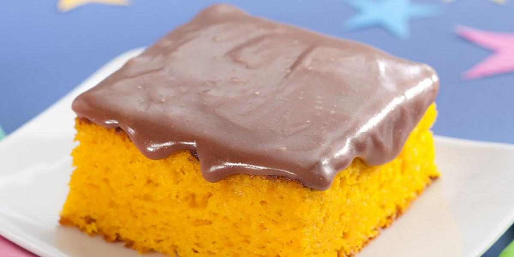

Carrot Cake recipe

Introduction
In this recipe you will learn to bake a simple traditional
Brazilian carrot cake. For this recipe you will only need
basic daily products and in less than 2 hours your cake will
be ready to be enjoyed.
Dough ingredients
| Amount |
Ingredient |
| 300g |
Plain flour |
| 400g |
Refined sugar |
| 3 |
Medium peeled and sliced Carrots |
| 1 teaspoon |
Baking powder |
| 4 |
Large eggs |
| 250ml |
Vegetable oil |
Topping ingredients
| Amount |
Ingredient |
| 250ml |
Milk |
| 1 tablespoon |
Butter |
| 2 tablespoons |
Honey |
| 100g |
Chocolate powder |
Dough Preparation steps
-
Preheat oven to 180 C°
-
Peel and slice carrots
-
Add in the carrots in the blender
-
Pour mixture into a mixing bowl
-
Add in the flour and baking powder
-
Grease and flour 20 cm tin
-
Pour batter into the tin and bake for 40 minutes
Topping Preparation steps
-
In a saucepan add the milk, chocolate, honey and butter
-
Over a medium flame keep stirring
-
simmering away for 8-10 minutes until thickened
-
Turn off the heat and allow to cool down fully
-
pour the chocolate sauce topping over the cake
Attachments